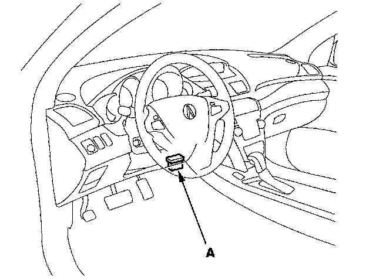

Steering Angle Sensor: Testing and Inspection
Steering Angle Sensor Center Point WritingNOTE: Before doing the steering angle sensor center point writing, place the vehicle on a flat level surface, and turn the steering wheel to the straight ahead position while moving the vehicle.
1. With the ignition switch OFF, connect the HDS to the data link connector (DLC) (A) under the driver's side of the dashboard.

2. Turn the ignition switch ON (II).
3. Make sure the HDS communicates with the vehicle and the VSA modulator-control unit. If it doesn't, troubleshoot the DLC circuit.
4. Do the steering angle sensor center point writing in the VSA ADJUSTMENT menu with the HDS.
NOTE: See the HDS Help menu for specific instructions.
5. Turn the ignition switch OFF.
6. Verify DTC 84 clears and does not return. If DTC 84 is indicated, do the appropriate troubleshooting.